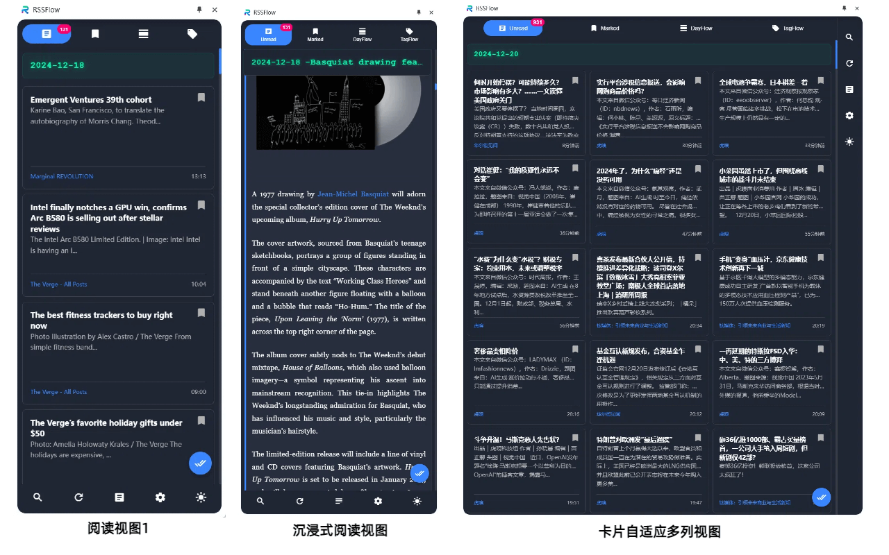

RSSFlow Reader
基于AI的智能内容流的RSS 阅读器，支持语音播客模式和 聊天对话快捷指令模式。


核心功能
智能 RSS 管理
支持多种 RSS 格式解析，智能处理内容编码，自动重试机制确保订阅源稳定性。
AI 文章摘要
支持根据订阅源开启自动摘要功能，同时支持DeepSeek、OpenAI、Google Gemini 和 SiliconFlow的配置，自动生成文章摘要、关键词和观点数据，支持tag自定义。
多视图模式
支持全文/摘要视图切换，提供 DayFlow（按日期分组）和 TagFlow（按标签分组）等多种浏览模式。
高效阅读体验
支持键盘快捷键（5个快捷键操作，开启飞速阅读模式）、木鱼阅读模式（标记已读时播放木鱼音效）、文章内容懒加载优化。
内容播客功能
支持为 DayFlow、TagFlow 生成内容播客，支持自定义prompt生成播客，生成个性化播客内容。
自动化功能
定期刷新获取最新文章，自动清理过期内容，后台更新未读计数，后台自动接收新数据，并自动生成摘要处理。
聊天对话模式
支持按日期、标签发起聊天对话模式，支持11个快捷指令包含（文章创作选题、文章写作、风险洞察、财经简报、外汇市场评估、币圈观察等11个快捷指令），也支持手动输入问题与RSS内容进行对话。
多语言本地化
支持12种语言界面，包括中文、英文、日文等。AI生成的摘要和快捷指令都与界面语言保持一致，例如：界面是中文，订阅英文、日文、韩文的订阅源，生成的摘要、播客、快捷指令处理的返回都是中文。
功能展示


常见问题
📌 是否支持所有 RSS 源？
支持主流的 RSS/Atom 格式，包括 RSS 2.0、RSS 1.0、Atom 等
📌 AI 摘要功能是否免费？
- RSS阅读功能、AI摘要功能免费使用，播客内容和聊天对话模式为高级功能，提供试用，试用结束后需激活码激活，激活码免费获得
- 需要根据自己需求自行选用大模型并配置，使用大模型产生的费用请参见各自大模型官网的收费标准。
📌 数据存储在哪里？
所有数据存储在本地，不进行任何云端保存或同步，确保您的阅读隐私
📌 支持哪些模型？
支持openai、DeepSeek、gemini、grok等，支持openai调用格式的模型都可以使用
📌 为什么有些模型的输出效果不好，内容没有很好的结构化
建议选用的模型是在gpt3.5 能力以上的模型，超越这个水平的模型可以达到稳定输出。
📌 我没有AI模型，也不懂怎么配置，是个新手应该怎么办？
本扩展不提供AI模型服务，用户需自己配置AI模型，这个是必须的条件，如果想发挥这个扩展你的最大能力，需配置好对应的AI模型。
📌 我需要播客和聊天对话模式这个功能，哪里可以获得激活码
播客和聊天对话都需要激活码进行激活，可以先进行试用，试用觉得可以后再采用激活机制，激活码永久有效，具体获得方式参照下方获得激活码的描述
📌 聊天对话使用的模型是什么模型，是AI配置的模型，可以不一样吗。？
聊天对话模式使用的模型默认跟生成摘要的模型一致，但可以在模型参数中可以配置不一样的模型，比如配置能力更优秀的模型，让快捷指令更充分发挥能力，输出质量更高的内容。
📌 支持哪些语言？
目前支持12种语言，包括中文、英文、日文、韩文、德文、西文等。界面语言、AI摘要和快捷指令的回复内容都会随语言设置自动适配调整。
📌 聊天对话模式的快捷指令很实用，可以极大的提高信息处理的效率，一定要付费激活才能使用吗？
目前支持5天试用期，试用期过后根据需要来选择是否需要激活码，希望能够得到一些支持，功能更新和迭代频率将会得到保障，同时也会有越来越多有趣的功能。
激活码
4CLJ-3F6P-2BIF-3LPC
D4VP-NO4I-DW8R-YVKO
1LUW-0FH8-QX6H-4UPL
OEYP-2E4U-OV1S-BQ9H
41DY-9M52-KZY9-GLJN
怎样免费获得激活码？(三选一)
不定期在本网站公布激活码
对扩展进行好评和评论
关注作者的X，留言获取